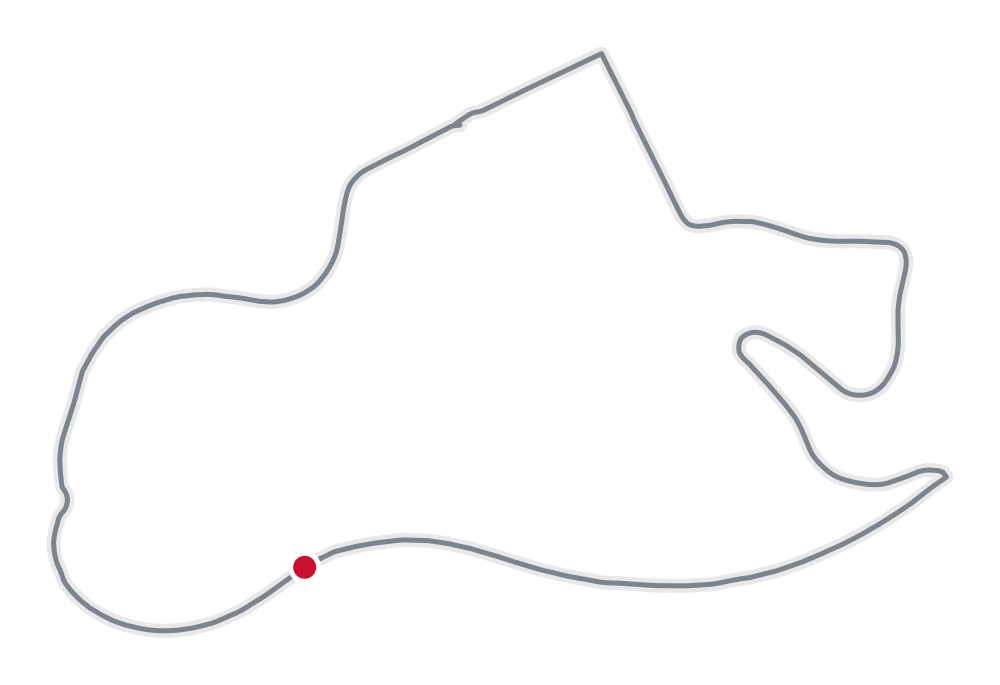
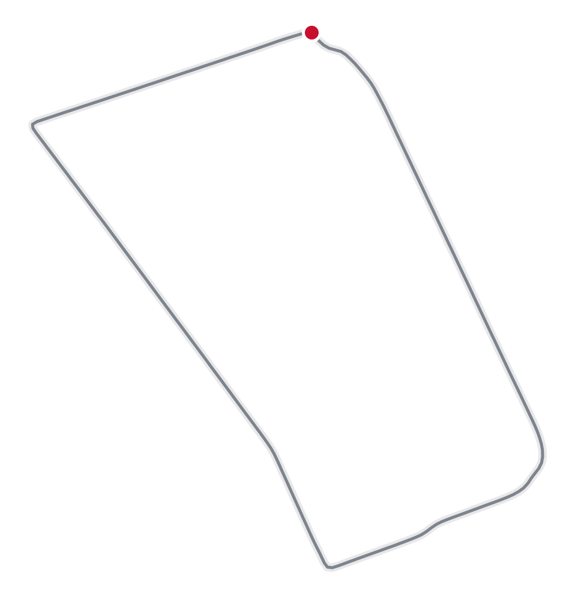
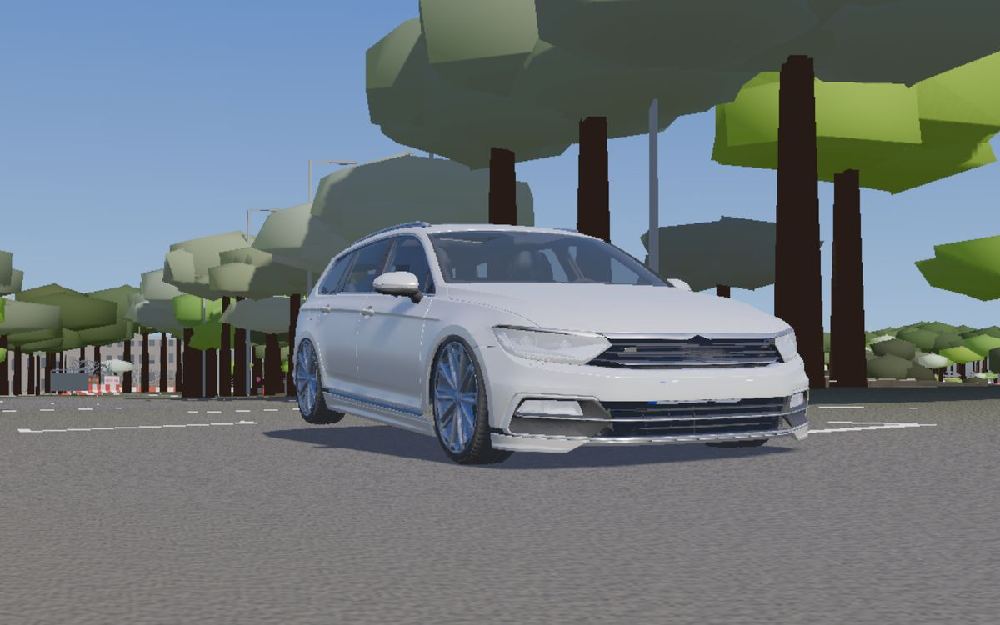
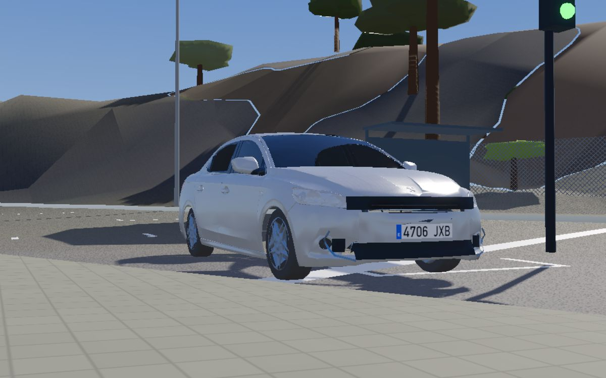
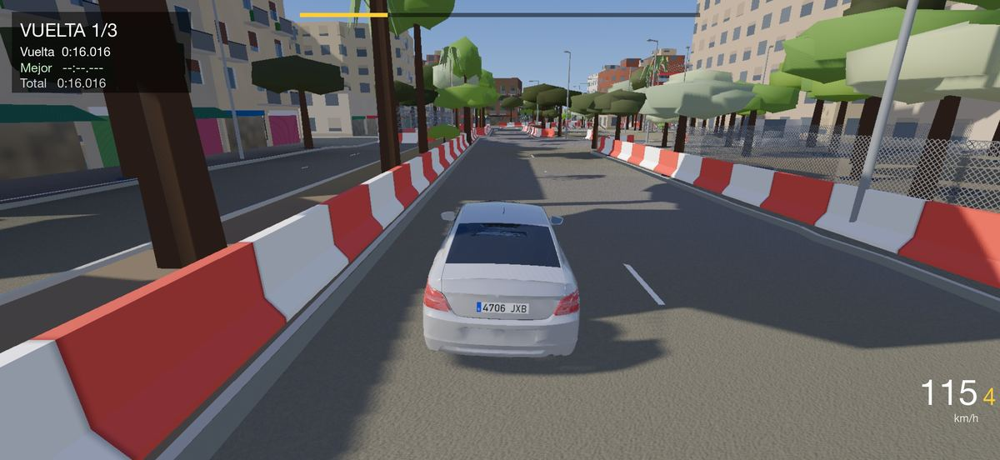
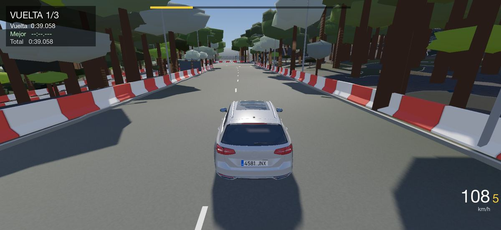
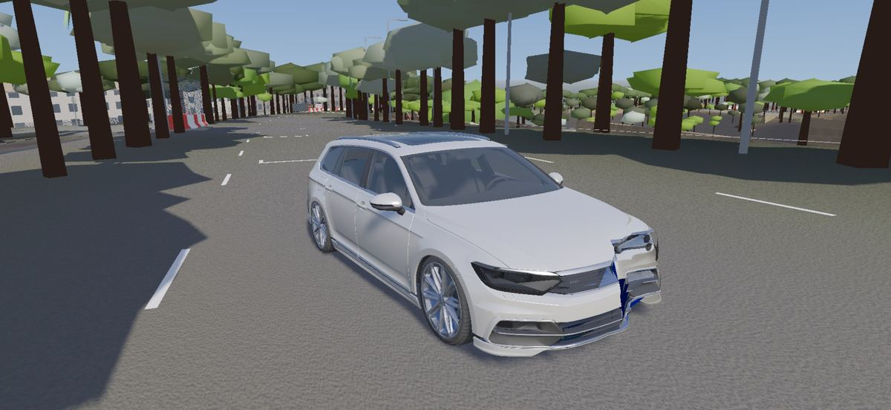
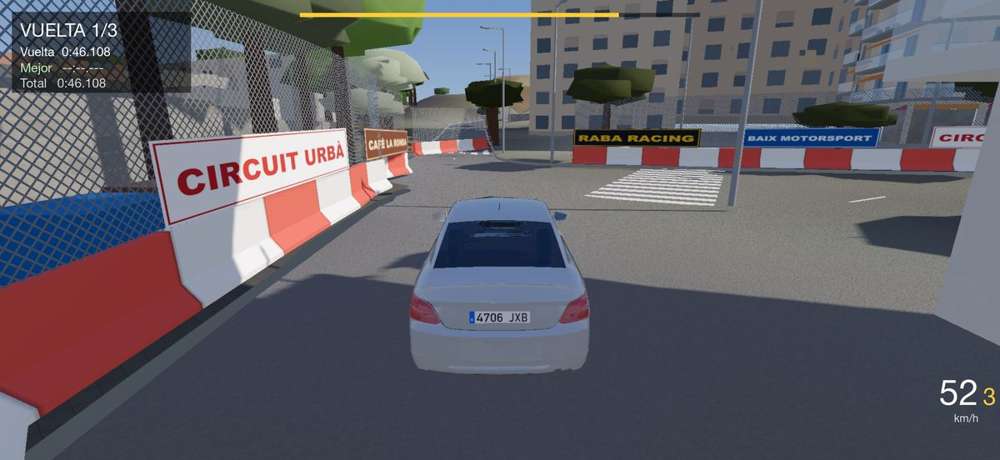
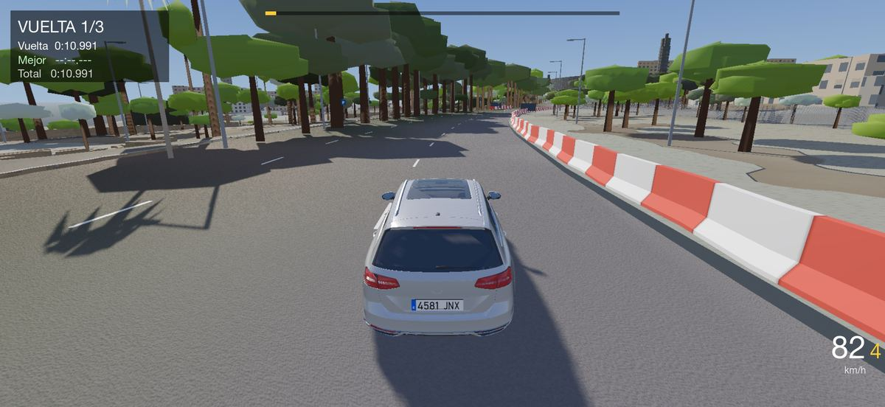
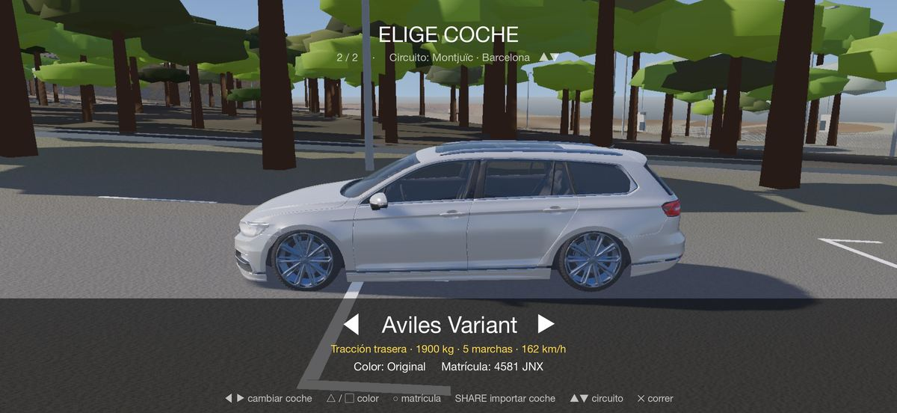

Montjuïc Barcelona
El trazado histórico de 1933–1975, en su sentido original: del Estadi a Santa Madrona y vuelta por avenidas de pinos.
- Vuelta
- 3,8 km
- Desnivel
- 67 m
- Vueltas
- 3
Montjuïc y L'Hospitalet recreados con la cartografía oficial de Catalunya: las mismas curvas, cuestas, árboles y señales que en la calle. Para iPhone y iPad.
Ver en el App Store
El trazado histórico de 1933–1975, en su sentido original: del Estadi a Santa Madrona y vuelta por avenidas de pinos.

Un circuito urbano rápido entre bloques de pisos, con vallas de hormigón, pasos de cebra y semáforos.

Familiar de 2016, tracción trasera, 1.900 kg y cinco marchas. Pesado en las curvas, rapidísimo en las rectas.

Berlina compacta, ligera y nerviosa. Ideal para las curvas cerradas de La Remunta.
Cada coche lleva una matrícula española de su época, y puedes poner la tuya. También puedes importar coches propios desde la app Archivos.






Rivales controlados por la IA, clasificaciones de Game Center, un tramo real de la C-32 y más coches.
Primera versión en el App Store. Nuevas páginas de soporte y privacidad.
Coches con nombre propio (Aviles Variant y Pudretech), matrículas de época aleatorias, pantalla de créditos e icono nuevo.
Daños en tiempo real y el circuito de Montjuïc.
Primera prueba: La Remunta, conducción girando el móvil y con mando.
Escríbenos a rabaffffhh@gmail.com o consulta las preguntas frecuentes.